Next: Элементы Формы, Previous: Top, Up: Top
Виды элементов формы В форме используются следующие элементы:
| • Форма группа свойств Основные: | ||
| • Форма группа свойств Использование: | ||
| • Форма группа свойств Оформление: | ||
| • Форма группа свойств Расположение: |
Next: Форма группа свойств Использование, Previous: Форма, Up: Форма
| • Заголовок: | ||
| • АвтоЗаголовок: | ||
| • Доступность: | ||
| • Разрешить изменять форму: | ||
| • Группировка: |
Next: АвтоЗаголовок, Previous: Форма группа свойств Основные, Up: Форма группа свойств Основные
Свойство Заголовок определяет заголовок формы, как его будут видеть разработчик в окне предварительного просмотра формы и пользователь во время работы с формой. Заголовок формы может быть дополнен системной информацией, полученной из свойств объекта конфигурации, связанных с расширенным представлением объектов, списков. Такое влияние на свойство Заголовок возможно, если установлено свойство АвтоЗаголовок.Например, если задать заголовок формы элемента справочника Товары – «Номенклатура», то при открытии товара в режиме 1С:Предприятие заголовок формы (рис. 2.43) будет состоять из строки «Номенклатура» плюс название конкретного товара («Босоножки»), плюс в скобках представление объекта конфигурации («Товар»).
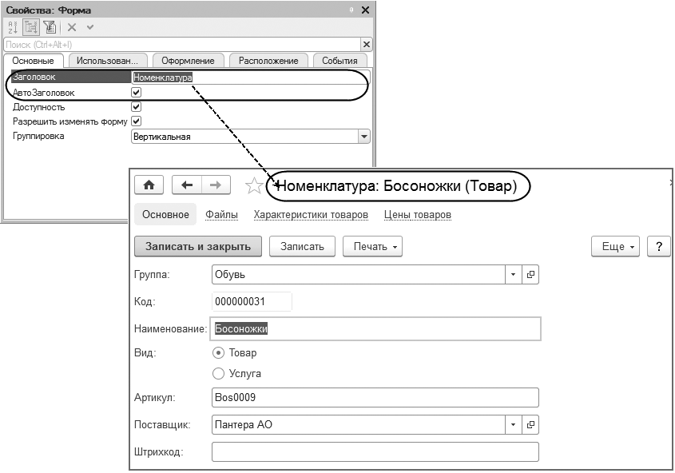Next: Доступность, Previous: Заголовок, Up: Форма группа свойств Основные
Если свойство Заголовок не заполнено, а свойство АвтоЗаголовок включено, то заголовок формы товара будет сформирован полностью автоматически – «Босоножки (Товар)». При снятом автозаголовке и пустом заголовке заголовок формы будет отсутствовать. С помощью свойства ОтображатьЗаголовок можно управлять показом заголовка формы (включая автозаголовок и признак модификации). Например, сняв флажок ОтображатьЗаголовок , можно сэкономить рабочее пространство экрана. Это особенно актуально для специализированных режимов основного окна приложения Рабочее место , Полноэкранное рабочее место и Киоск .В режиме основного окна приложения Обычный свойство ОтображатьЗаголовок применяется только для форм, расположенных на начальной странице. Когда на начальной странице расположено несколько форм, то вверху всегда выводится надпись «Начальная страница», а над каждой формой – ее собственный заголовок. Можно при желании отключить показ заголовков форм на начальной странице (рис. ниже).
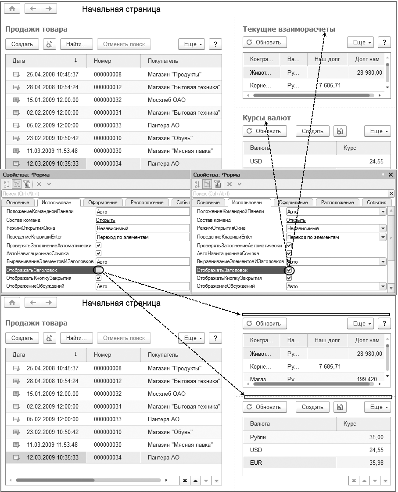Next: Разрешить изменять форму, Previous: АвтоЗаголовок, Up: Форма группа свойств Основные
Снятие флажка у свойства Доступность означает, что все элементы формы недоступны для редактирования пользователем. Кроме того, ограничить доступность формы можно с помощью свойства ТолькоПросмотр , которое доступно только из встроенного языка.
Next: Группировка, Previous: Доступность, Up: Форма группа свойств Основные
Свойство РазрешитьИзменятьФорму определяет возможность изменения формы в пользовательском режиме работы. Настройка форм в пользовательском режиме работы является стандартной возможностью, предоставляемой платформой. Это означает, что пользователь может изменить порядок элементов формы, перегруппировать их, изменить их видимость. С помощью свойства РазрешитьИзменятьФорму такую возможность можно пресечь. Вместо запрещения изменения всей формы разработчик может применять «точечные» запреты для конкретных элементов формы. Свойства, с помощью которых можно запрещать изменения элементов формы, рассматриваются в разделах данной главы, посвященных элементам формы.
Previous: Разрешить изменять форму, Up: Форма группа свойств Основные
Свойство Группировка определяет режим группировки подчиненных элементов формы. Возможные значения свойства: Вертикальная , Горизонтальная и Горизонтальная если возможно . При значении Вертикальная элементы формы располагаются сверху вниз. При значении Горизонтальная элементы будут располагаться слева направо. При значении Горизонтальная если возможно применяется горизонтальная группировка при наличии достаточного места по ширине формы. В противном случае – вертикальная группировка
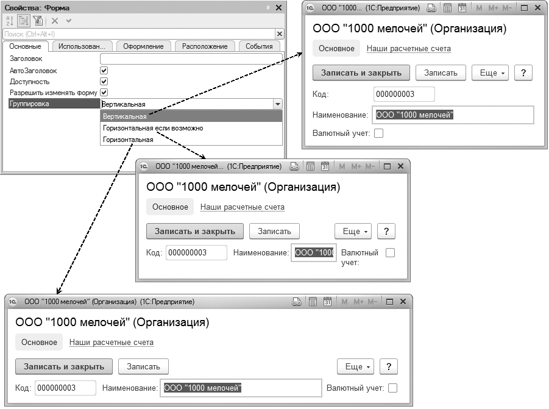Настройка влияет только на элементы верхнего уровня иерархии подчиненных элементов. Порядок расположения элементов формы, находящихся внутри групп, определяется свойством Группировка соответствующей группы элементов.
Next: Форма группа свойств Оформление, Previous: Форма группа свойств Основные, Up: Форма
| • ОтображатьЗаголовок: | ||
| • Положение командной панели: | ||
| • Режим открытия окна: | ||
| • Проверять заполнение автоматически: | ||
| • Список групп: |
Next: Положение командной панели, Previous: Форма группа свойств Использование, Up: Форма группа свойств Использование
Если же на начальной странице располагается только одна форма и свойство ОтображатьЗаголовок включено, то заголовок формы выводится вместо надписи «Начальная страница». Если флажок ОтображатьЗаголовок снят, то вместо заголовка формы выводится надпись «Начальная страница».
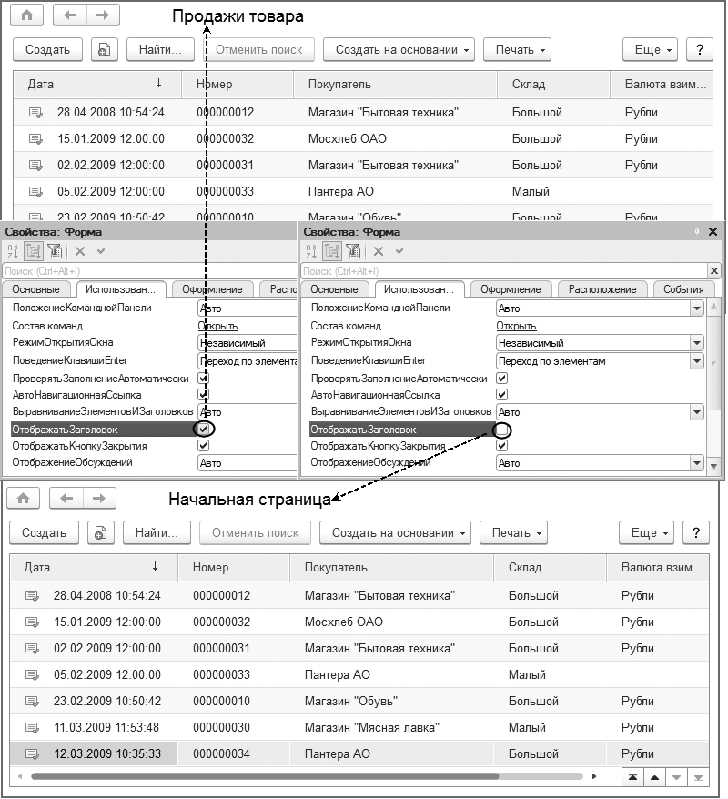Next: Режим открытия окна, Previous: ОтображатьЗаголовок, Up: Форма группа свойств Использование
Свойство ПоложениеКоманднойПанели определяет положение командной панели формы. Свойство может принимать одно из четырех значений: Нет , Авто , Верх , Низ (рис. ниже). По умолчанию системой устанавливается значение Авто . Это означает, что решение о расположении командной панели принимается платформой.
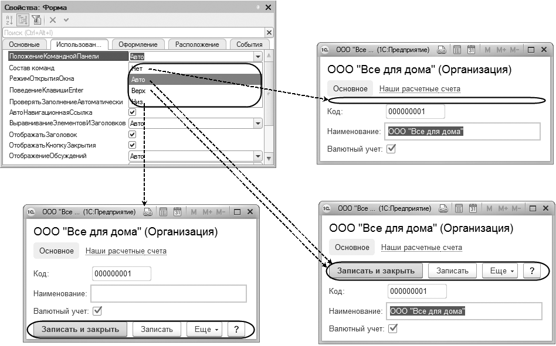Next: Проверять заполнение автоматически, Previous: Положение командной панели, Up: Форма группа свойств Использование
Свойство РежимОткрытияОкна определяет, в каком окне будет открываться форма. Возможны значения Независимый , Блокировать окно владельца и Блокировать весь интерфейс. В режиме Независимый форма открывается в рабочей области основного окна приложения. При этом окно формы не препятствует возможности переключения между окнами приложения. В таком режиме форма живет своей, не мешающей остальным формам жизнью. В режиме Блокировать окно владельца форма открывается в блоки- рующем окне, при этом работа с формой, из которой инициировано открытие текущей формы, блокируется. Данный режим предназначен для форм, в которых вводится мало информации и работа с которыми не требует длительного времени, например для ввода элементов справочников, содержащих небольшое количество реквизитов. Этот режим внешне аналогичен модальному открытию формы, однако при открытии из встроенного языка работа модуля не останавливается на время работы открываемой формы. При открытии происходит блокировка только «родительского» окна, другие окна приложения остаются доступными. В режиме Блокировать весь интерфейс форма открывается в блокирующем окне, при этом блокируется работа не только с родительской формой, но со всем интерфейсом прикладного решения. Окна, блокирующие весь интерфейс, обеспечивают работу приложения без использования модальных окон. Отказ от модальности является необходимым условием для работы «1С:Предприятия» в веб-клиенте и на мобильных устройствах, а также по ряду других причин.
Next: Список групп, Previous: Режим открытия окна, Up: Форма группа свойств Использование
Установленный флажок у свойства ПроверятьЗаполнениеАвтоматически означает автоматическую проверку заполнения реквизитов формы при работе пользователя.
С помощью свойства СписокГрупп можно поддерживать автоматическую синхронизацию данных в форме, когда в ней отображаются одновременно список групп и собственно содержимое иерархического справочника. Это свойство становится доступным в том случае, если основным реквизитом формы выступает реквизит типа ДинамическийСписок . Для этого в свойстве формы СписокГрупп нужно указать таблицу, отображающую динамический список, который показывает только иерархию групп отображаемого справочника (рис. ниже).
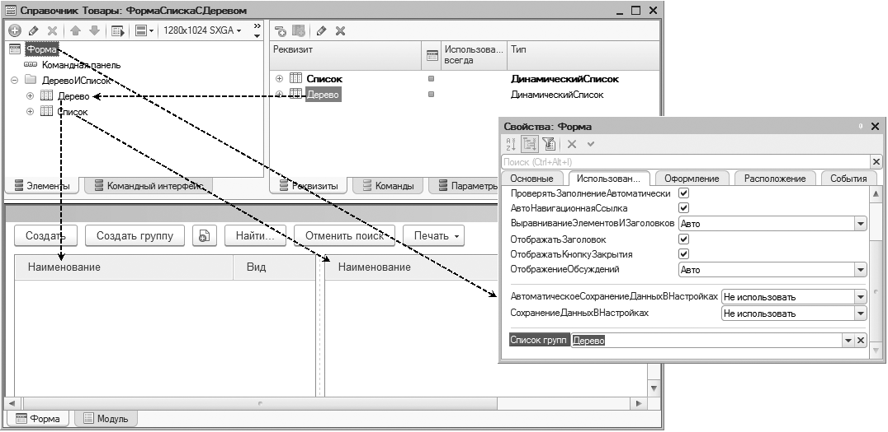В этом случае при выборе группы в списке групп в списке элементов будет отображаться содержимое выбранной группы, и наоборот (рис. ниже).
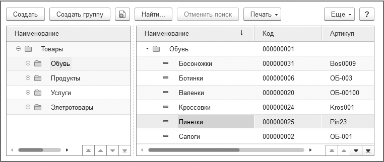Next: Форма группа свойств Расположение, Previous: Форма группа свойств Использование, Up: Форма
| • Вертикальная прокрутка: | ||
| • Условное оформление: | ||
| • Вариант масштаба: |
Next: Условное оформление, Previous: Форма группа свойств Оформление, Up: Форма группа свойств Оформление
С помощью свойства ВертикальнаяПрокрутка можно управлять отображением вертикальной прокрутки формы, а также тем, как будут вести себя элементы формы в том случае, если форма будет сжиматься по вертикали. Возможны следующие режимы включения вертикальной прокрутки формы:
На рис. 2.48 продемонстрированы различия режимов включения вертикальной прокрутки формы. При значении Использовать (см. рис. 2.48 слева внизу) вертикальная прокрутка появляется сразу же, как только форма сжимается по вертикали относительно своего исходного размера. При этом все элементы формы, в т. ч. картинка товара, имеют свой реальный размер. При значении Использовать при необходимости элементы формы сжимаются так, чтобы избежать вертикальной прокрутки формы. В частности, при такой же высоте формы, что и в предыдущем случае, картинка товара сжимается и полоса прокрутки отсутствует (см. рис. 2.48 справа внизу). Но если элементы формы сжаты максимально и все равно не умещаются по высоте формы, то вертикальная прокрутка формы появляется (см. рис. ниже справа вверху). Стандартно свойство ВертикальнаяПрокрутка устанавливается в значение Авто . Менять его, как правило, нет необходимости. Исключением являются формы, имеющие поля для вывода HTML- документов, форматированных документов, текстовых документов, табличных документов (кроме форм отчетов). Для таких форм свойство Вертикальная прокрутка должно быть установлено в значение Использовать при необходимости .
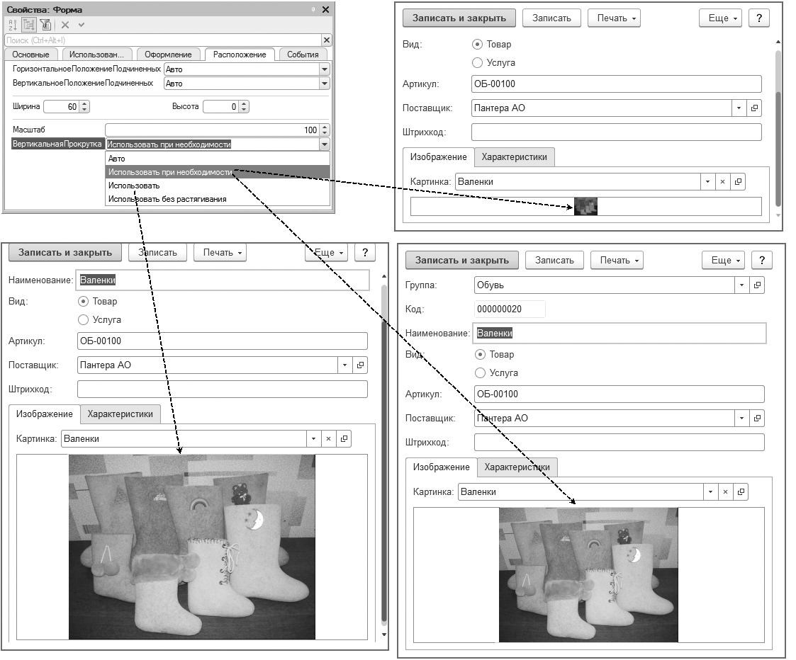рис. 2.48
Next: Вариант масштаба, Previous: Вертикальная прокрутка, Up: Форма группа свойств Оформление
Гиперссылка Открыть у свойства УсловноеОформление позволяет открыть окно Настройка условного оформления . В данном окне можно можно настроить, например, выделение цветом некоторого элемента в зависимости от значений других элементов формы.
Previous: Условное оформление, Up: Форма группа свойств Оформление
Свойство ВариантМасштаба определяет, каким образом форма будет отображаться в интерфейсе Такси :
С помощью свойства ВариантМасштаба можно управлять отображением одной формы, разрабатываемой в конфигураторе. Она может выглядеть в обычном или компактном масштабе. Чтобы изменить вариант масштаба сразу всех форм прикладного решения, нужно программно установить значение свойства ВариантМасштабаФормКлиентскогоПриложения объекта НастройкиКлиентскогоПриложения . Компактный вариант масштаба может использоваться для быстрого перевода сложных насыщенных форм с интерфейса Версия 8.2 на интерфейс Такси . Чтобы, не переделывая саму форму, быстро уменьшить масштаб ее отображения примерно до 80 %.
Previous: Форма группа свойств Оформление, Up: Форма
| • Масштаб: |
Если форма будет использоваться только в интерфейсе Такси , то лучше уменьшать/увеличивать масштаб формы с помощью свойства Масштаб . Данное свойство указывает, каким должен быть масштаб данной формы относительно ее базового размера (в процентах). Значение свойства может изменяться от 10 до 400. Свойство Масштаб не применяется для форм с компактным изображением. Масштаб, установленный в клиентском приложении, накладыва ется на масштаб, указанный в конфигураторе для каждой формы. Таким образом, если в конфигураторе установлен масштаб формы 70 %, а в клиентском приложении установлен масштаб 50 %, то результирующий масштаб будет 35 % от реального размера формы.
Next: Элемент формы Поле, Previous: Форма, Up: Top
| • Элемент формы Группа: | ||
| • Элемент формы Таблица: | ||
| • Элемент формы Кнопка: | ||
| • Элемент формы Декорация: | ||
| • Дополнение элемента формы: | ||
| • Контекстное меню элементов формы: |
Next: Элемент формы Таблица, Previous: Элементы Формы, Up: Элементы Формы
Элемент формы Группа предназначен для группировки других элементов формы. Это могут быть группы полей, группы страниц, группы команд. Также для элементов типа Таблица можно создавать группы колонок. Группы могут быть вложенными друг в друга. Свойство Вид элемента формы Группа может принимать значения:
Рис. 2.70
Рис.2.71
Помимо отдельных кнопок в командную панель можно добавлять подчиненные группы следующего вида (рис. 2.72):
Рис. 2.72
Рис .2.73
Рис. 2.74
Next: Элемент формы Кнопка, Previous: Элемент формы Группа, Up: Элементы Формы
Элемент формы Таблица предназначен для отображения и редактирования различных табличных данных (рис. 2.75). Это может быть динамический список, табличная часть, список значений и т. д. У таблицы формы могут быть свои командные панели, контекстные меню. Поля колонок элемента Таблица могут быть сгруппированы (см. рис. 2.74).
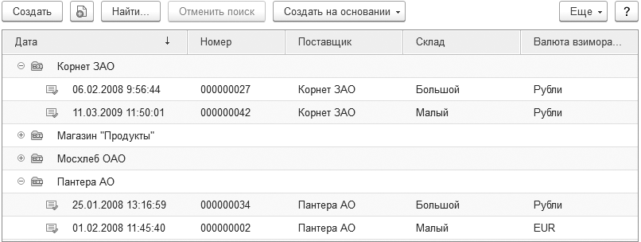Рис. 2.75
Next: Элемент формы Декорация, Previous: Элемент формы Таблица, Up: Элементы Формы
Элемент формы Кнопка предназначен для отображения кнопок и гиперссылок, при нажатии на которые выполняются связанные с ними команды. Кнопки могут быть подчинены командной панели. В зависимости от этого свойство Вид элемента формы Кнопка может принимать значения:
Рис. 2.76. Элементы формы «Кнопка» и «Кнопка командной панели»
Рис. 2.77. Элементы формы «Гиперссылка» и «Гиперссылка командной панели»
Next: Дополнение элемента формы, Previous: Элемент формы Кнопка, Up: Элементы Формы
Элемент формы Декорация представляет собой оформительский элемент формы. Декорация может представлять собой надпись или картинку (рис. 2.78). Декорация не связана с данными (реквизитами формы) и обычно выводится для текстовых пояснений, не изменяемых из встроенного языка.
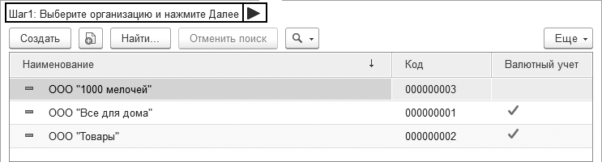Рис. 2.78. Элемент формы «Декорация»
Next: Контекстное меню элементов формы, Previous: Элемент формы Декорация, Up: Элементы Формы
Дополнение элемента формы предназначено для отображения дополнительных свойств элемента формы (на момент написания это дополнения таблицы, отображающей данные динамического списка) и управления этими элементами. Существуют следующие дополнения:
Рис. 2.79. Элемент формы «Дополнение элемента формы»
Previous: Дополнение элемента формы, Up: Элементы Формы
Для всех элементов формы характерно наличие контекстного меню, вызываемого с помощью мыши или клавиатуры. В большинстве случаев во время работы приложения контекстные меню формируются платформой автоматически. Однако разработчик может вмешаться в этот процесс и повлиять на состав контекстного меню.
Чтобы получить доступ к контекстному меню элемента формы, нужно из контекстного меню элемента формы в редакторе формы выполнить команду Показать контекстное меню (рис. 2.80).
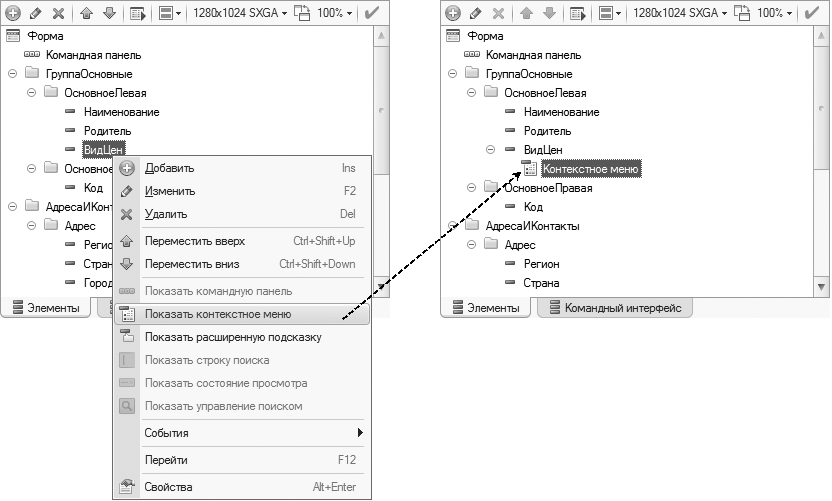Рис. 2.80. Доступ к контекстному меню элемента формы
После этого появится возможность добавлять в контекстное меню элемента собственные команды. Если разработчик желает модифицировать автоматически формируемое контекстное меню элемента формы, то флажок Автозаполнение в свойствах Контекстное меню элемента снимать не следует (рис. 2.81). В случае необходимости формирования полностью своего контекстного меню флажок следует снять.
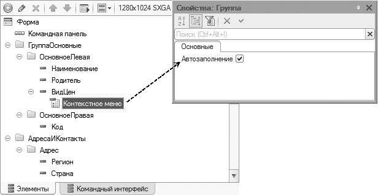Рис. 2.81. Автозаполнение контекстного меню
Previous: Элементы Формы, Up: Top
Элемент формы Поле предназначен для отображения примитивных типов данных, текстовых, табличных, HTML-документов, диаграмм, календарей, индикаторов и др. Тип данных, которые отображает элемент Поле , влияет на то, какие значения может принимать его свойство Вид .
| • Элемент формы Поле вида Поле ввода: |
Previous: Элемент формы Поле, Up: Элемент формы Поле
| • Поле ввода группа свойств Основные: | ||
| • Поле ввода группа свойств Использование: | ||
| • Поле ввода группа свойств Оформление: | ||
| • Поле ввода группа свойств Расположение: | ||
| • Поле ввода группа свойств События: |
Next: Поле ввода группа свойств Использование, Previous: Элемент формы Поле вида Поле ввода, Up: Элемент формы Поле вида Поле ввода
| • Маска: | ||
| • РежимПароля: |
Next: РежимПароля, Previous: Поле ввода группа свойств Основные, Up: Поле ввода группа свойств Основные
Свойство Маска позволяет задать маску для ввода символов. Например, можно задать маску для ввода телефона (рис. 2.95).
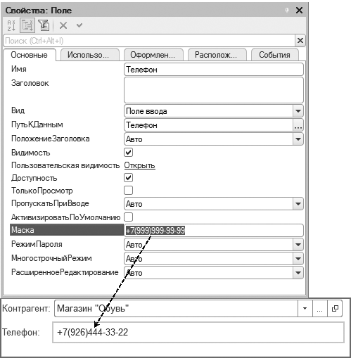Previous: Маска, Up: Поле ввода группа свойств Основные
Свойство РежимПароля при установке значения Да будет заме- нять вводимые символы специализированными символами (рис. 2.96).
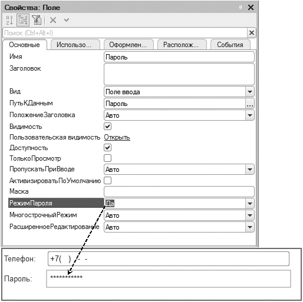Next: Поле ввода группа свойств Оформление, Previous: Поле ввода группа свойств Основные, Up: Элемент формы Поле вида Поле ввода
| • ВыбиратьТип: | ||
| • СписокВыбора: |
Next: СписокВыбора, Previous: Поле ввода группа свойств Использование, Up: Поле ввода группа свойств Использование
Свойство ВыбиратьТип влияет на поведение системы при выборе типа данных реквизита, который отображает поле ввода. Проявля- ется это в случае использования реквизита составного типа данных (рис. 2.94).
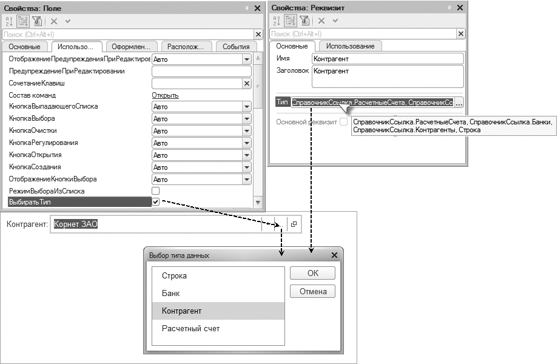Previous: ВыбиратьТип, Up: Поле ввода группа свойств Использование
Свойство СписокВыбора позволяет задать список, из которого
можно выбирать значения в поле ввода. Для того чтобы поле ввода
работало как поле выбора, нужно установить свойство РежимВыбо
раИзСписка . В этом случае кнопка выпадающего списка появится
у поля автоматически, хотя стандартно в поле ввода она не показыва
ется (рис. 2.97).
Если же флажок у свойства РежимВыбораИзСписка снят, то можно
явно задать наличие кнопки выпадающего списка у поля ввода,
установив свойство КнопкаВыпадающегоСписка в значение Да .
Хотя сам список выбора все равно будет открываться при переходе
к полю и без кнопки выпадающего списка, но многим пользователям
с ней привычнее и сразу понятно, что это поле для выбора из списка
значений.
Next: Поле ввода группа свойств Расположение, Previous: Поле ввода группа свойств Использование, Up: Элемент формы Поле вида Поле ввода
Next: Поле ввода группа свойств События, Previous: Поле ввода группа свойств Оформление, Up: Элемент формы Поле вида Поле ввода
Previous: Элемент формы Поле, Up: Top
| • свойства Управляемая форма: |
Previous: Все свойства формы, Up: Все свойства формы
АвтоЗаголовок
АвтоНавигационнаяСсылка
АвтоматическоеСохранениеДанныхВНастройках
ВертикальнаяПрокрутка
ВариантМасштаба
ВертикальноеПоложениеПодчиненных
ВертикальныйИнтервал
ВладелецФормы
ВыравниваниеЭлементовИЗаголовков
Высота
ГоризонтальноеПоложениеПодчиненных
ГоризонтальныйИнтервал
Группировка
Доступность
Заголовок
ЗакрыватьПриВыборе
ЗакрыватьПриЗакрытииВладельца
ИмяФормы
КлючНазначенияИспользования
КлючСохраненияПоложенияОкна
КлючУникальности
КоманднаяПанель
Команды
Масштаб
МодальныйРежим
Модифицированность
НавигационнаяСсылка
Окно
ОписаниеОповещенияОЗакрытии
ОтображатьЗаголовок
ОтображатьКнопкуЗакрытия
ОтображениеОбсуждений
Параметры
ПоведениеКлавишиEnter
ПодчиненныеЭлементы
ПоложениеКоманднойПанели
ПроверятьЗаполнениеАвтоматически
РазрешитьИзменятьФорму
РежимОткрытияОкна
СворачиваниеЭлементовПоВажности
СохранениеДанныхВНастройках
СохраняемыеВНастройкахДанныеМодифицированы
СписокГрупп
ТекущийЭлемент
ТолькоПросмотр
УникальныйИдентификатор
УсловноеОформление
Ширина
ШиринаПодчиненныхЭлементов
Элементы
ЭтаФорма
ЭтотОбъект